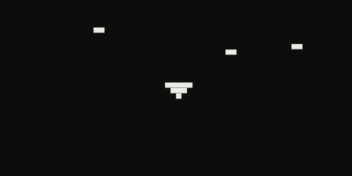
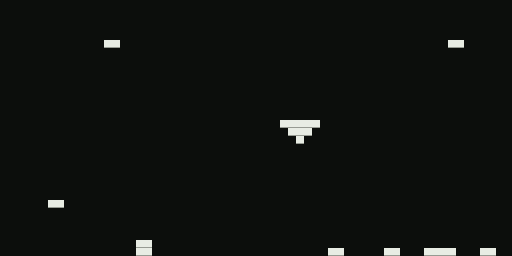
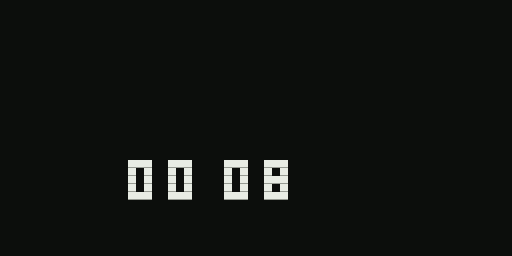

Brickwall Blitz
L.M. Flood · DREAMER no. 19 (1982) p. 3 2K RAM



Bricks fall from space and pile up into a wall that you must destroy, by catching bricks with your base and dropping them on it. The game ends when the wall reaches the base and shows the survival time. A high score routine for machines with more than 1K can be added.
Keys
4 left, 6 right, F fire a caught brick.
Files
| File | Version | Load | Run |
|---|---|---|---|
| Brickwall Blitz.d68 | main | 0080-03FF | C000 |
| Brickwall Blitz (high score).d68 | high score | 0080-0433 | C000 |
Listing as transcribed (with notes): brickwall_blitz.txt, brickwall_blitz_hiscore.txt
Source
DREAMER no. 19 on archive.org, p. 3 (PDF page 4). Author: L.M. Flood.
Corrections applied
- 03BD B0 -> BD (the call to the CHIPOS show routine, as in the twin routine at 02F5-0300; otherwise the brick/base test at 035D never draws; not a published erratum).
- High score version: 00AC 0000 -> 1400 and extra routine 0400-0433.
Open doubts
None.